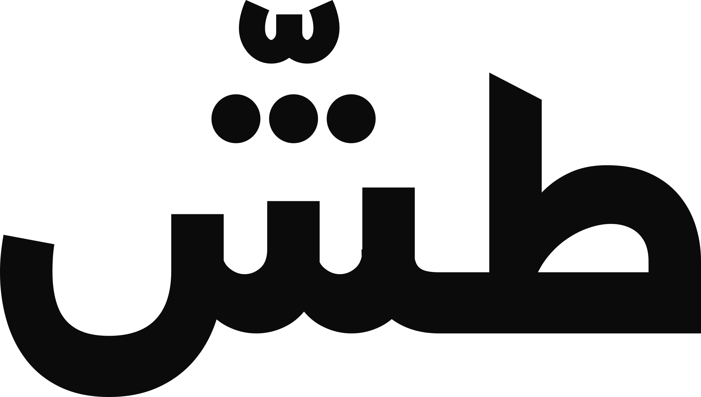

Order form · 12 Q
شلون أطلب؟
جاوبوا على هالأسئلة بالدايركت أو الواتساب، ولو باختصار.
ونرجع لكم باقتراح وسعر مبدئي.
عبّوا النموذج وصوّروه لنا بالواتساب أو الدايركت. اللي ما تعرفونه اتركوه — نكمّله سوا.
- 01
اسم المشروع
والحساب على إنستقرام إذا موجود
- 02
نشاطكم
مطعم، عطور، أزياء، متجر أونلاين…
- 03
شنو تبون تعلنون عنه؟
منتج، خدمة، عرض، أو فرع جديد
- 04
هدف الإعلان
إطلاق، عرض لفترة محدودة، تعريف، مناسبة
- 05
منو جمهوركم؟
العمر، المنطقة، وشنو يهمهم
- 06
المنصة والمقاس
ريلز وتيك توك، ستوري، بوست، أو بوستر
- 07
مدة الفيديو
6–10 ث، 15–20 ث، 30 ث، أو اقترحوا علينا
- 08
متى تحتاجونه؟
التاريخ، وهل مرتبط بمناسبة أو إطلاق
- 09
إعلانات عاجبتكم
2–3 روابط كمرجع للأسلوب
- 10
الميزانية التقريبية
بالدينار الكويتي، ولو تقريبية
- 11
شنو متوفر عندكم؟
لوقو، صور المنتج، لقطات، ألوان البراند
- 12
للتواصل
الاسم ورقم الواتساب